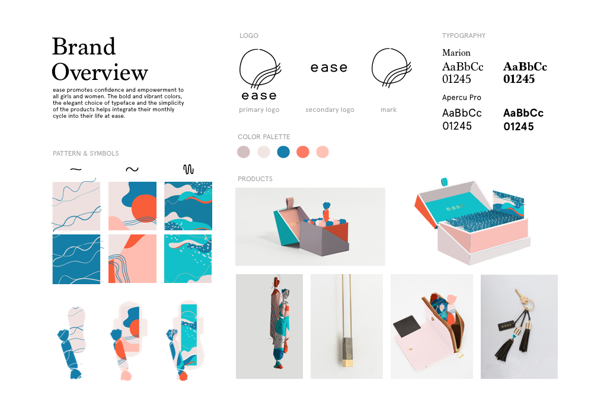
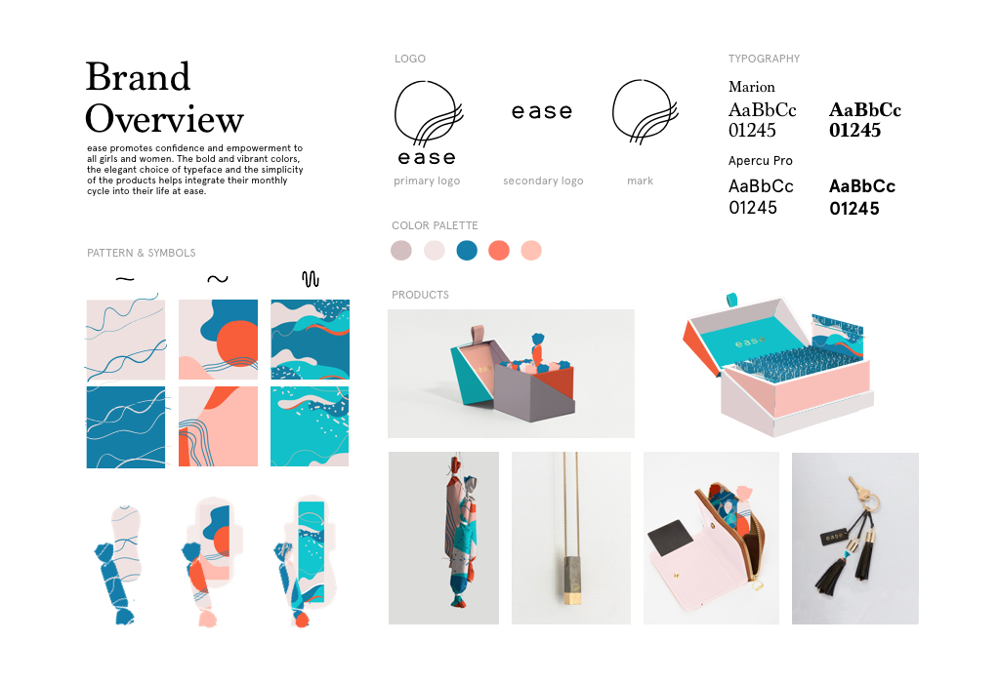

05
Ease
identity design
product design
digital
Ease was born from the idea that a lot of women are ashamed and discomforted discussing the topic of monthly periods, especially in more conservative areas of the world. This brand places paramount importance on addressing the needs of women who have felt self-conscious about carrying feminine products in public spaces. The vision is to provide a discreet, functional and elegant solution that ensures women feel comfortable and confident wherever they go. The subscription model is designed to cater to the dynamic lifestyles of women, and they can enjoy a hassle-free monthly personalizeed delivery of their essential feminine hygiene products. Whether it is a busy day at the office, a dinner date or a weekend adventure, ease empowers women to move forward with grace and confidence.

 
